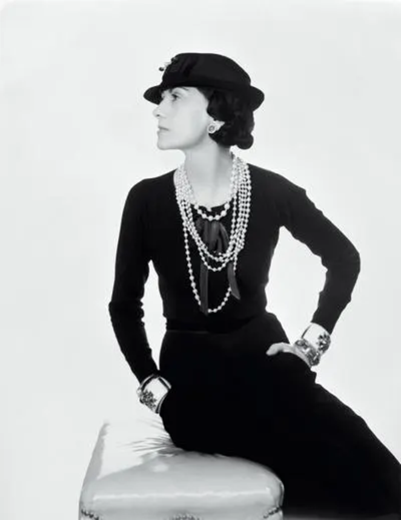
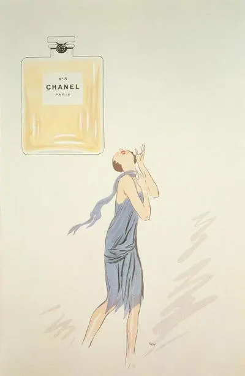
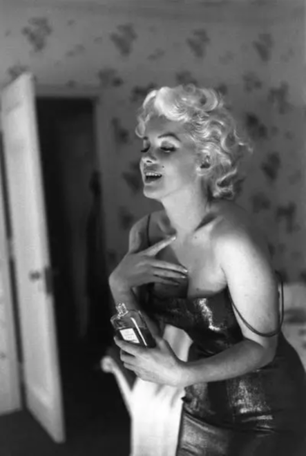
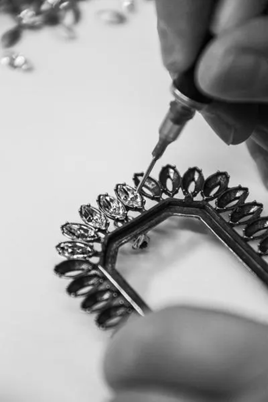
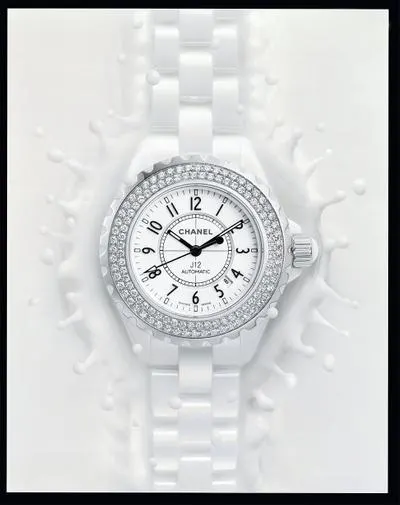

menu


"내 손끝에서 피어난 전설이 더 발전하고 번성하기를 꿈꾸며, 샤넬이 오랫동안 행복한 브랜드로 남기를 바란다."

1883
가브리엘 샤넬의 탄생 : 1883년 8월 19일 프랑스에서 태어났으며,
“코코”라는 애칭을 얻게 된 샤넬은 파리 깡봉가 21번지에
'샤넬 모드'라는 모자 부티크를 오픈합니다.

1921
샤넬 N°5 향수 런칭 : 가브리엘 샤넬의 의뢰를 받아 조향사 에르네스트 보(Ernest Beaux)는 N°5. “여성을 상징하는 향수”의 탄생을 알렸습니다.

1952
마릴린 먼로와 N°5 : “잘 때 어떤 옷을 입나요?”라는 기자의 물음에 마릴린 먼로는 “샤넬 No. 5만을 입어요.”라고 대답했고,이후 사진작가 N°5를 뿌리는 마릴린 먼로의 모습을 카메라에 담았습니다.

1985
메종 데뤼 인수 : 샤넬 하우스가 처음으로 인수한 공방은 단추를 만드는 유서 깊은 제작사인 데뤼 공방이었습니다.

2003
화이트 J12 워치 런칭 : 국제적인 성공을 거둔 블랙 세라믹 J12워치를 뒤이어 화이트 세라믹 버전의 새로운 J12워치가 출시되었습니다.
2020
GABRIELLE CHANEL MANIFESTE DE MODE 전시회 : 의상 박물관인 팔레 갈리에라를 무대로, 파리에서 개최한 첫번째 샤넬 회고전을 개최했습니다.